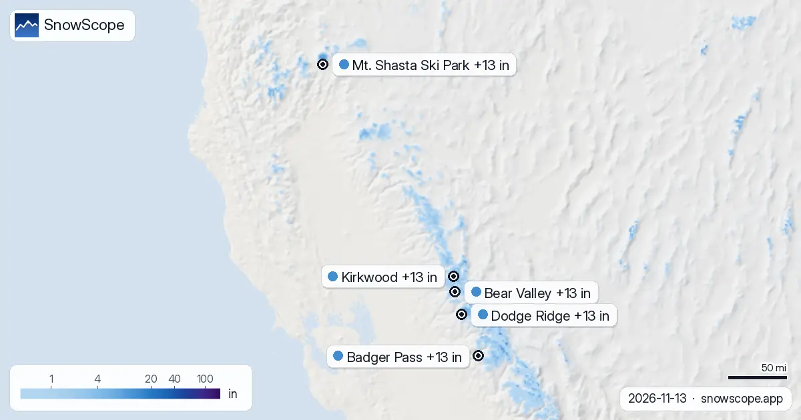

Prévisions neige dans l'Ouest américain : jusqu'à 13 in à Bear Valley d'ici le 16 novembre
Entre aujourd'hui et le 16 novembre, nous attendons 13 in (34 cm) à Bear Valley, 13 in (34 cm) à Dodge Ridge et 13 in (33 cm) à Badger Pass. Un mot sur les chiffres : les valeurs des stations de ski sont une estimation de notre modèle pour le haut du domaine, alors que chaque station de mesure mesure un seul point à la date indiquée. Le terrain en montagne sèche apprend une chose : la carte est un début, la pente a le dernier mot.
Consultez les prévisions neige en temps réel pour Bear Valley sur l'application SnowScopeHauteurs de neige, alertes poudreuse et carte 3D, gratuitement.La neige sur les pentes aujourd'hui
Des lieux cités ici, Kirkwood est en tête avec environ 9 in (24 cm) sur le haut du domaine ; Bear Valley 8 in (21 cm) et Dodge Ridge 6 in (14 cm) viennent ensuite.
Dans la région, 122 stations sur 195 dans l'Ouest américain ont de la neige en altitude aujourd'hui, et notre modèle trouve 49 050 sq mi (127 040 km²) de sol blanc.
| Station | Hauteur de neige | Neige fraîche, 72 h | Attendu, jours suivants | Sommet |
|---|---|---|---|---|
| Bear Valley | 8 in (21 cm) | 5 in (13 cm) | 13 in (34 cm) | 8 484 ft (2 586 m) |
| Dodge Ridge | 6 in (14 cm) | 3 in (7 cm) | 13 in (34 cm) | 8 143 ft (2 482 m) |
| Badger Pass | 0 in (0 cm) | 1 in (2 cm) | 13 in (33 cm) | 7 795 ft (2 376 m) |
| Kirkwood | 9 in (24 cm) | 5 in (13 cm) | 13 in (32 cm) | 9 462 ft (2 884 m) |
| Mt. Shasta Ski Park | 6 in (14 cm) | 6 in (16 cm) | 13 in (32 cm) | 7 539 ft (2 298 m) |

À quelle altitude skier aujourd'hui
Le 15 novembre, l'isotherme 0 °C à Bear Valley grimpe entre 4 003 ft (1 220 m) et 10 302 ft (3 140 m), plus haut que le sommet des remontées (8 484 ft / 2 586 m) : attendez-vous à de la pluie ou de la neige mouillée sur toutes les pentes.
Air doux à Dodge Ridge le 15 novembre : l'isotherme 0 °C va de 4 921 ft (1 500 m) à 10 564 ft (3 220 m), au-dessus du sommet de la station (8 143 ft / 2 482 m), donc pluie ou neige mouillée possibles sur toutes les pentes.
Le 15 novembre, l'isotherme 0 °C à Badger Pass grimpe entre 6 857 ft (2 090 m) et 11 220 ft (3 420 m), plus haut que le sommet des remontées (7 795 ft / 2 376 m) : attendez-vous à de la pluie ou de la neige mouillée sur toutes les pentes.
Du bas au sommet de Bear Valley : 1 in (3 cm) en bas (6 640 ft / 2 024 m), 3 in (8 cm) à mi-pente (7 562 ft / 2 305 m) et 9 in (22 cm) au sommet (8 484 ft / 2 586 m).
Les jours à venir
D'ici le 16 novembre, la prévision apporte 13 in (32 cm) à Kirkwood et 13 in (32 cm) à Mt. Shasta Ski Park.
La surface blanche a changé : 49 467 sq mi (128 120 km²) le 11 novembre, 49 050 sq mi (127 040 km²) aujourd'hui, et 64 429 sq mi (166 870 km²) attendus le 16 novembre.
Sécurité et risque d'avalanche
Les prévisions à quelques jours peuvent changer : regardez à nouveau la carte la veille du départ.
Conseils aux skieurs
- Les prévisions à quelques jours peuvent changer : regardez à nouveau la carte la veille du départ.
- Au-dessus de 0 °C, l'air transforme la neige en soupe et en eau. Les remontées les plus hautes gardent la neige la plus sèche.
- La neige neuve ne reste pas neuve longtemps. Partez tôt, tant qu'elle est encore douce et sans traces.
- Avant le hors-piste ou la randonnée, lisez le bulletin d'avalanche officiel (liens ci-dessous).
- Activez une alerte poudreuse dans l'app SnowScope pour savoir quand Bear Valley reçoit de la neige fraîche.
À propos de ces chiffres
Les hauteurs de neige des stations sont la neige la plus épaisse sur le haut du domaine, d'après le modèle de neige SnowScope (environ 1 km, calcul du 13 novembre) ; ce sont des estimations pour une zone, pas une mesure en un point. Les valeurs des stations de mesure sont mesurées à la date indiquée. Les prévisions peuvent changer. Consultez toujours le bulletin d'avalanche officiel avant le hors-piste.
Bulletins d'avalanche officiels: avalanche.org
Citer ce bulletin
Pour la recherche, l'enseignement ou la presse : chiffres et graphiques réutilisables librement sous CC BY 4.0 avec cette citation.
SnowScope (2026), Prévisions neige dans l'Ouest américain : jusqu'à 13 in à Bear Valley d'ici le 16 novembre, https://snowscope.app/blog/fr/2026/11/us-west-bear-valley-snow-forecast-13-november-2026.html, consulté le 2026-11-13
SnowScope (Atlas Labs). (2026, November 13). Prévisions neige dans l'Ouest américain : jusqu'à 13 in à Bear Valley d'ici le 16 novembre. SnowScope snow reports. https://snowscope.app/blog/fr/2026/11/us-west-bear-valley-snow-forecast-13-november-2026.html
BibTeX
@misc{snowscope2026uswestbearvalleysnowfore,
author = {{SnowScope (Atlas Labs)}},
title = {Prévisions neige dans l'Ouest américain : jusqu'à 13 in à Bear Valley d'ici le 16 novembre},
year = {2026},
month = nov,
howpublished = {\url{https://snowscope.app/blog/fr/2026/11/us-west-bear-valley-snow-forecast-13-november-2026.html}},
note = {Published 2026-11-13 17:36 UTC; accessed 2026-11-13}
}· CC BY 4.0 · Méthodes, données et outils →
Bear Valley : neige et température selon l'altitude, cet hiver vs l'hiver dernier (outils) →
Suivre Bear Valley
Gratuit : un message quand la neige arrive, et la météo chaque matin.